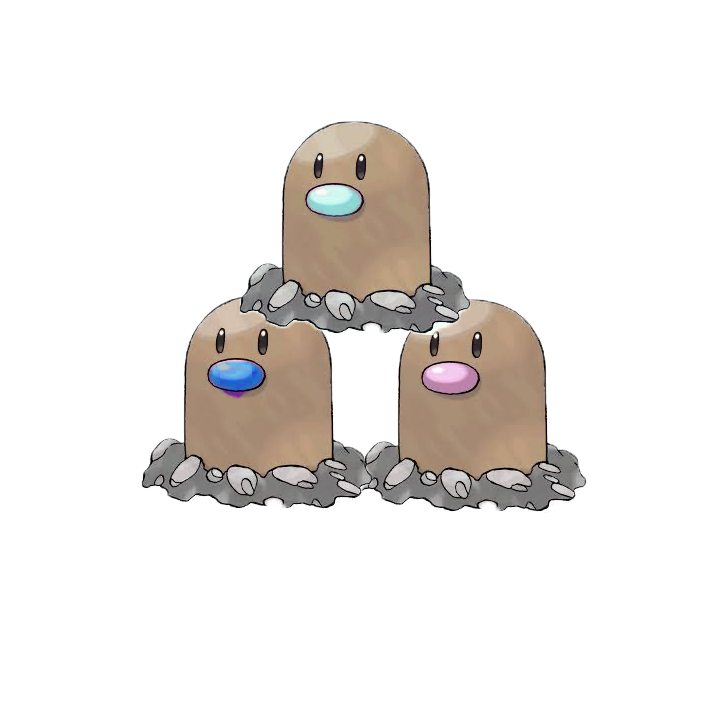
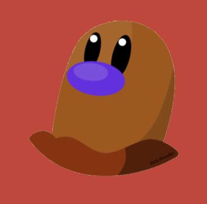
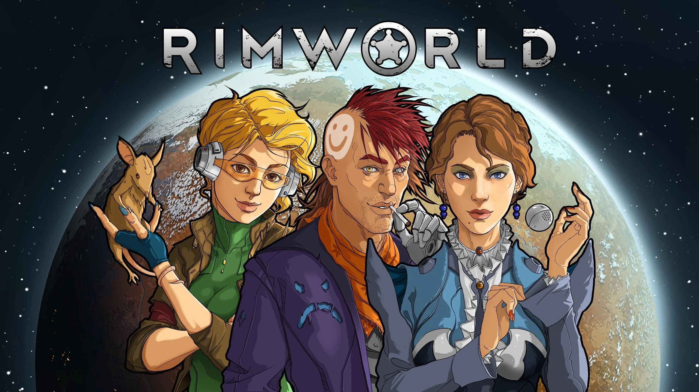

Know More About The Austin
I do basketball, varsity basketball for the school and also do Track and Field, I mainly focus on basketball more than track but I don't expect on doing basketball on the next level and more so start working towrds game design or the supply chain, I am also doing for my Economics class a News Paper assignment on how 9/11 affected the economics back in the days, I got cool hair I like the color of it, it's mixed with brown, yellow. and red, but when I play basketball my hair turns a little blond, something I think my hair chooses the color it wants to be for the day, some think I dyed it but it's all natural, don't know the chances of that but it's cool.

Some of my favorite hobbies are basketball, soccer, and video games. I’ve always liked playing sports because they keep me active and are a fun way to hang out with friends. Basketball and soccer are fast-paced and competitive, which makes them exciting. When I’m not playing sports, I usually spend time gaming to relax and connect with friends online. Every once in a while, I’ll go golfing with my dad, which is more laid-back but still fun. I also enjoy traveling whenever I get the chance because it lets me see new places and experience different things. Overall, my hobbies give me a good mix of staying active, relaxing, and trying new experiences.

Popeyes is very good and I could eat it everyday, about like 6-7 decades, I could and would eat Popeyes. If there was a Popeyes basketball team. I would train and practice basketball everyday just for a chance to even try out with Popeyes basketball, I also just wanna go home so I could play the great game of RimWorld, a very good game that i would recommend to many, as the game regenerates a different storyline everytime you play, which is pretty awesome and cool.



Some of my favorite hobbies are basketball, soccer, and video games. I’ve always liked playing sports because they keep me active and are a fun way to hang out with friends. Basketball and soccer are probably the ones I enjoy the most since they’re fast-paced and competitive, and I like working with a team. When I’m not playing sports, I usually spend time gaming. Video games are a good way for me to relax, but they’re also a lot of fun when I’m playing online with friends. Every once in a while, I’ll go golfing with my dad. I don’t golf nearly as much as I play basketball or soccer, but I like it because it’s more laid-back, and it gives me time to just hang out with him. I also really enjoy traveling. Whenever I get the chance to go somewhere new, I like exploring different places and experiencing things I don’t normally see at home. Overall, I think my hobbies give me a good balance. Sports keep me active, video games let me chill, and traveling gives me new experiences and perspectives. Lately I’ve also been doing some research on Popeyes, and honestly, it just makes me appreciate it even more. Out of all the fast-food spots, Popeyes stands out because of how good the chicken is—it’s crispy, flavorful, and way better than a lot of other places I’ve tried. Even their sides hit different, especially the biscuits and fries. What I like about Popeyes is that it’s not just fast food, it actually feels like a meal that was made with some care. It’s definitely one of my go-to spots, and I’d argue it’s one of the best fast-food chains out there.